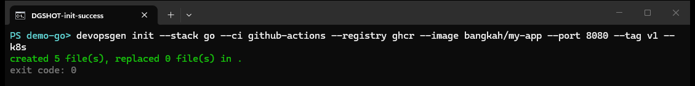
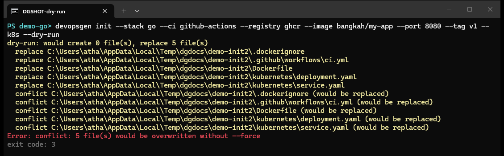
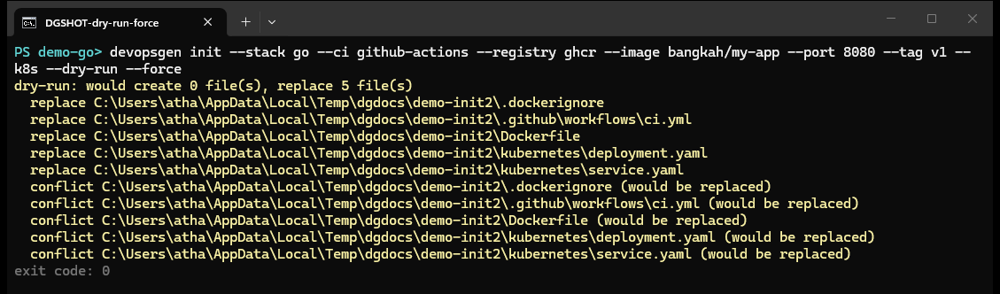
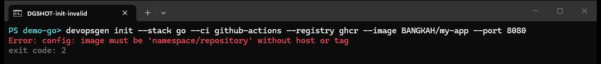

command reference
devopsgen init
Initialize DevOps configuration. In an interactive terminal with no complete configuration the TUI wizard is launched; when all required parameters are supplied via flags the process runs headless and never waits for stdin.
devopsgen init [flags]Flags
| Flag | Default | Description |
|---|---|---|
| --stack | auto-detected | Project stack: go or nodejs. |
| --app-type | auto-detected | Application type (see devopsgen list). |
| --ci | github-actions | CI provider. |
| --registry | dockerhub | Container registry: dockerhub or ghcr. |
| --image | — | Image repository as namespace/repository — no host and no tag. |
| --tag | latest | Additional image tag alias. |
| --port | — | Application port, 1–65535. |
| --k8s | true | Generate Kubernetes manifests. |
| --ingress | off | Enable Kubernetes Ingress (requires --ingress-host). |
| --ingress-host | — | Ingress hostname, validated as RFC 1123. |
| --health-path | — | HTTP health probe path wired into manifests. |
| --build-cmd | — | Build command. |
| --build-path | . | Go package path to build inside the container. |
| --start-cmd | — | Startup command. |
| --test-cmd | — | Test command. |
| --output-dir | . | Output directory. |
| --dry-run | off | Simulate without writing anything. |
| --force | off | Overwrite existing regular files. |
Success & conflicts
A clean run writes every template and exits with 0. A second run over an existing project stops before touching anything and exits with 3 until you add --force:


Preview plans with --dry-run
--dry-run prints the byte-plan: which files would be created, which would be replaced, and which are in conflict. With a conflict present it exits 3; combined with --force a fully green plan exits 0 without writing anything:


Config validation
Invalid configuration fails fast with 2 before any file is planned — e.g. an image that must be namespace/repository without host or tag, a port outside 1–65535, or an Ingress without a host:

--force create .bak backups, and any failure mid-run automatically rolls back to the pre-run state.